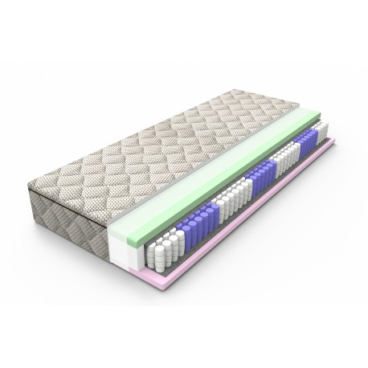
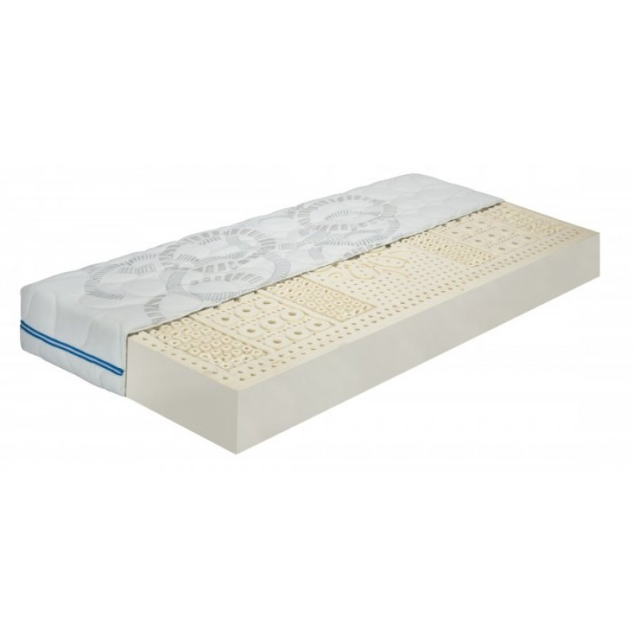
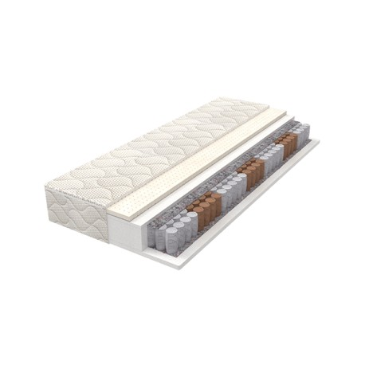
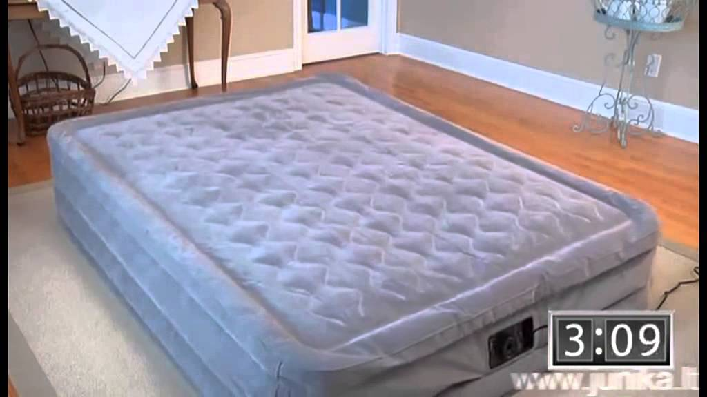

Photo gallery
2020.10.28 08:03









- Napsie čiužinys
Vienas tobulas čiužinys maloniam miegui. Napsie kūrėme galvodami apie idealų prisitaikymą, kad kiekvienas kūnas jaustųsi išties gerai. Dar viena svarbi savybė – mūsų čiužinys puikiai vėdinasi, nes oras laisvai patenka į čiužinio pagrindą ir iš jo pasišalina. - Čiužinys TYLA - LONAS
„Classic“ yra čiužinys be spyruoklių su išskirtine poliuretano putų pjovimo sistema, kurios pagalba yra išgaunamos ortopedinės savybės. Čiužinys yra labai kompaktiškas, dėl to tinkamas dviaukštėms ir ištraukiamoms lovoms. Čiužinys taip pat yra labai lengvas, todėl nekils jokių problemų jį transportuojant. Minkštoji dal - Čiužiniai – Guru Baldai
Čiužinys Tyla® yra vienas minkštesnių mūsų gaminamų čiužinių. Tačiau šiuo atveju minkštumo nereikėtų bijoti - atsigulus atrodo, kad čiužinys ne tik lengvai pasiduoda kūno spaudimui, bet ir kelia iš apačios, taip palaikydamas teisingą atramą stuburui. Šis čiužinys - vienas populiariausių LONO čiužinių. - Dormeo čiužiniai
Čiužinys EXTRA STRONG 1200. IŠMATAVIMAI. Plotis: 120 cm Ilgis: 198 cm Aukštis: 24 cm. 179 00 ... - | TEMPUR®
Čiužinys BLACK MULTIPOCKET LUX-15%. 407 EUR: 479 EUR : Prekės tipas: Spyruokliniai čiužiniai Komfortas: Gamintojas: SLEEPWELL Plačiau : Čiužinys HILDING SALSA-15%. 195 EUR: 229 EUR : Prekės tipas: Viskoelastiniai čiužiniai Komfortas: Gamintojas: HILDING ... - Čiužiniai | Miegamojo baldai | Elektroninė baldų ...
Ortopedinis čiužinys su minkštesne ir kietesne pusėmis (žiema – vasara) – LYRA. Branduolys: Pocket spyruoklės (220 -240 vnt./m2). Miegojimo paviršiai (užpildas): putų poliuretanas 3 cm vienoje pusėje ir putų poliuretanas 2 cm + kokoso pluoštas 1 cm kitoje čiužinio pusėje. Antialerginis nuimamas užvalkalas. - Čiužiniai pagal išmatavimus internetu, virš 700 variantų ...
Didžioji LONO čiužinių gamybos proceso dalis – kruopštus rankų darbas. Visi čiužiniai gaminami pagal individualius klientų poreikius ir pageidavimus. Gamybos procesas yra personalizuotas, todėl vienu metu gaminamas tik vienas čiužinys. Tai leidžia pasiekti ir užtikrinti tobulą čiužinių kokybę ir aukščiausią komforto lygį. - Kokybiški spyruokliniai Pocket čiužiniai | AURAPLUS
Čiužinys turi QuickRefresh™ (greitai nusegamą) užvalkalą. Plačiau Kiekvieno TEMPUR® čiužinio viduje. Visi mūsų čiužiniai, sukurti remiantis NASA kosmoso technologijomis, pasižymi autentiška TEMPUR® medžiaga, kuri prisitaiko prie jūsų kūno miegant, bei suteikia bekompromisį komfortą ir tinkamą atramą visą naktį. - lateksiniai čiužiniai
Čiužinys bene pats svarbiausias daiktas namuose. Jei tu miegi rekomenduojamas 8 valandas per naktį, tu praleisi trečdalį savo gyvenimo lovoje. Dėl to ypač svarbu atsakingai bei teisingai pasirinkti čiužinį. Žemiau esantis pirkimo gidas tau padės. Rodyti daugiau. Vegas Čiužinys SMART TEMPO 160x190 ... - Riposo
AKCIJA - SUPER KAINA!!! Paskutinis čiužinys! Vokiečių gamintojo f.a.n. Frankenstolz Multiflex KS poliuretano putų čiužinys Kietumas H2 - minkšto tipo. Rekomenduojama žmonėms iki 80 kg. Kietumas H3 - vidutinis kietumas. Rekomenduojama žmonėms iki 100 kg. Kietumas H4 - kietas. Rekomenduojama žmonėms iki 120 kg. Dydis: 200 cm x 200 ...